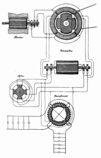
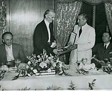
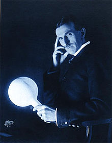

ПАТЕНТИ/НАГРАДЕ И СМРТ
ПАТЕНТИ/НАГРАДЕ
Никола Тесла се не зауставља само на овим истрживањима. Следе проналасци и патенти из области наизменичних струја високе фреквенције, радио-технике, а изучавао је и рендгентске зраке. Помоћу рендгенског зрачења начинио је прве снимке делова људског тела, али је и указао на њихово штетно зрачење.
Са преко 700 патената Никола Тесла се, уз Фарадеја, сматра највећим проналазачем у историји науке. У његову част јединица за јачину магнетне индукције носи његово име - тесла (Т).

Почасни докторати и ордени
- Техничка школа, Беч, 1908.
- Универзитет у Београду, 1926.
- Универзитет у Загребу, 1926.
- Техничка школа, Праг, 1936.
- Техничка школа, Грац, 1937.
- Универзитет у Поатјеу, 1937.
- Техничка школа, Брно, 1937.
- Универзитет у Паризу, 1937
- Политехничка школа, Букурешт, 1937.
- Универзитет у Греноблу, 1938.
- Универзитет у Софији, 1939.
- Орден Светог Саве, II класе, Србија, 1892.
- Орден књаза Данила I, 1895
- Орден Светог Саве, I класе Краљевина СХС, 1926.
- Орден Југословенске круне, 1931.
- Орден белог орла, I класе, Краљевина Југославија, 1936.
- Орден белог лава, I класе, Чехословачка, 1937.
- Медаља Универзитета у Паризу, 1937.
- Медаља Универзитета Св. Климент, Софија, 1939.

СМРТ
Умро је 7. јануара 1943. године у хотелској соби у Њујорку. Сахрана је обављена о трошку наших исељеника. Тим поводом, градоначелник Њујорка је рекао: "Никола Тесла је умро. Умро је сиромашан, али је био један од најкориснијих људи који су икада живели. Оно што је створио велико је и, како време пролази, постаје још веће".
Своја осећања према домовини Тесла је изнео у свом говору у Београду 1892. године: "У мени може бити нешто, што може бити и обмана, као што чешће бива код млађих људи, али ако будем сретан да остварим бар неке од својих идеала, то ће бити доброчинство за цело човечанство. Ако се те моје наде испуне, најслађа мисао биће ми та, да је то дело једнога Србина."
Његова заоставштвина и урна са пепелом налазе се у Теслином музеју у Београду. Свет ће још дуго чекати док се не појави геније раван Николи Тесли.

УВОД НИКОЛА ТЕСЛА
МЛАДЕ ГОДИНЕ
ЗАПОСЛЕЊЕ И СРЕДЊЕ ГОДИНЕ